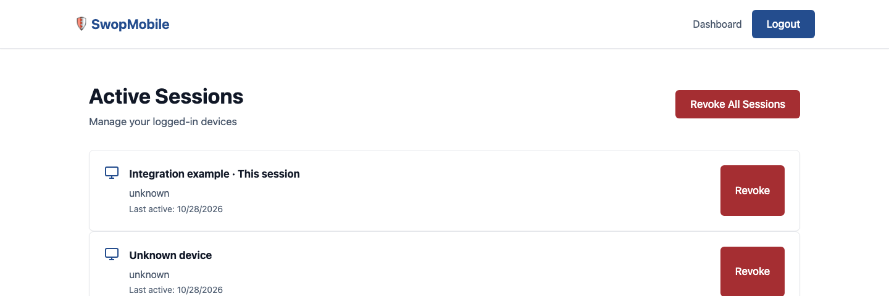

SWOPMOBILE / ENGINEERING PROJECT
One account service.
Clear boundaries.
A reusable authentication project with login, rotating credentials, device sessions, and server-enforced roles. Built with JavaScript, Hono, Cloudflare Workers and SQLite/D1.

What each role can actually do
| Action | User | Moderator | Admin |
|---|---|---|---|
| Own profile, jobs, favorites, sessions | Yes | Yes | Yes |
| Other users’ private jobs/favorites | No | No | No |
| List accounts and view role details | No | No | Yes |
| Role-editing API | Not implemented | Not implemented | Not implemented |
Login, refresh, logout—in plain language
Your password is checked against a salted PBKDF2 hash. A signed access token identifies your session. A rotating refresh token renews access; replay revokes that session. Protected requests check that the session is still active. Logout removes the session, so its access token stops working.
Honest project boundaries
The integration example runs locally. Existing account pages retain their established service configuration. There is no claim of production readiness or real customer adoption. Role labels do not imply unimplemented moderation features. Public previews contain no private account records.
Test cases, local setup, Postman requests, and security limitations are documented in the repository.